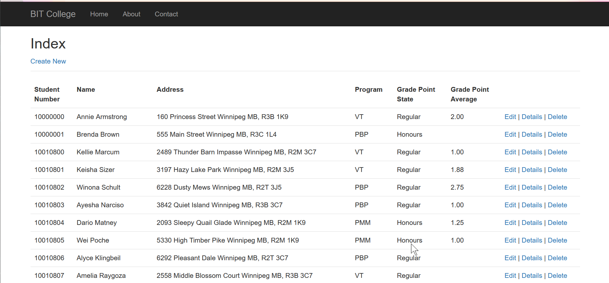
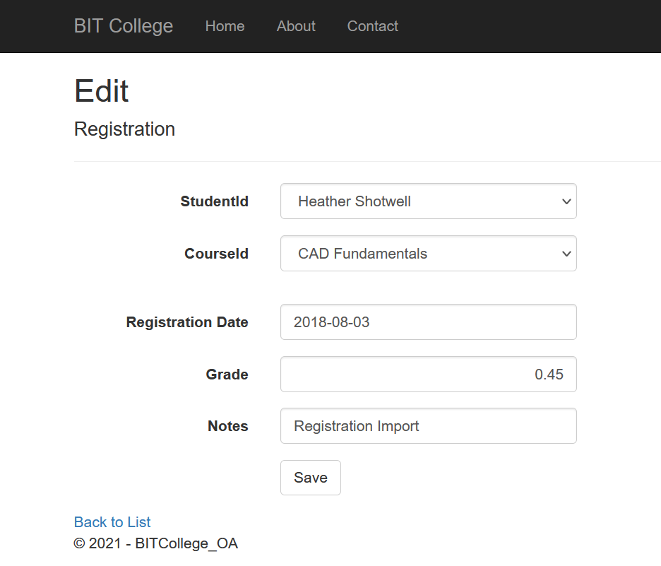
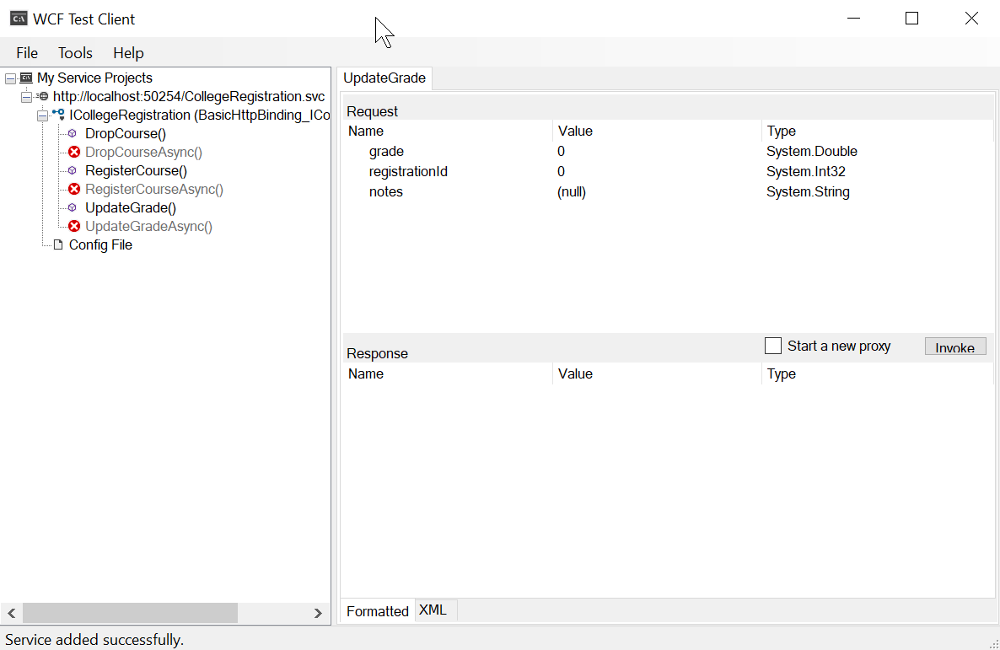
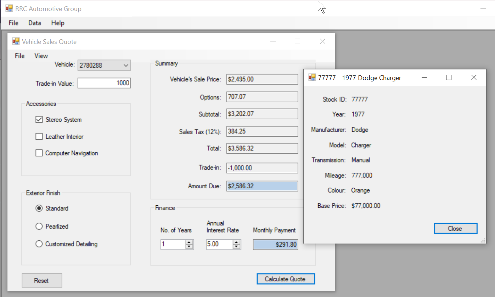
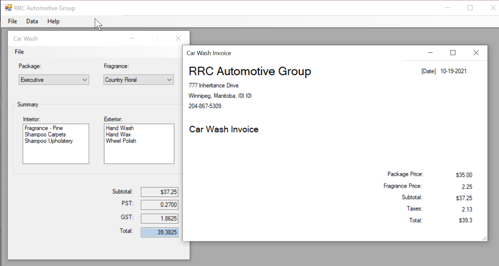
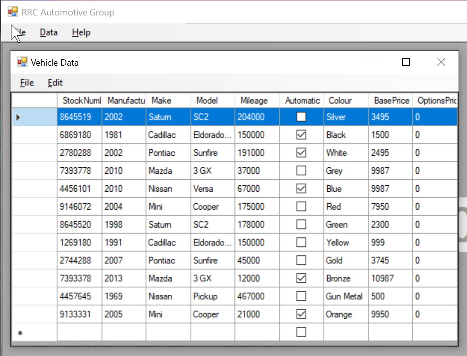

•Experienced Coding Mentor
•Knowledge of C#, PHP, JavaScript, and SQL
•IT helpdesk
•IT technician
•Enthusiastic about challenges
•Strong communication skills; active listener
•Eager to work alone or in teams
C#
Object-Oriented principles
A CRUD web application that incorporates the MVC design pattern connected to a relational database using ASP.NET. A data maintenance system that handles proccesses regarding students, courses, registrations, and others.
A page that displays students with details and CRUD options.

An edit page for registrations.

Testing a custom made WCF service.

An application with multiple forms that supports the business proccesses of a car dealership with a carwash using the .NET framework
The form that generates a sales quote based on the input data.

The form that calculates the car wash invoice based on the customer's choices.

A page that displays vehicles data located in the database with editable entries.
